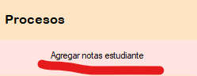
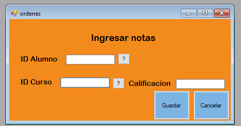

El proceso de "Agregar notas estudiante" tiene como objetivo registrar una nueva nota para cierto estudiante al sistema. Para ello debemos dirigirnos al menú de procesos y luego seleccionamos la opción "Agregar notas estudiante".
En la siguiente Figura podremos observar el Formulario que debemos llenar. Hay que tener en cuenta que a la hora de ingresar un valor en "ID Alumno" e "ID Cursos" tienen que existir, ademas que unicamente tienen que ser ingresados datos numericos
